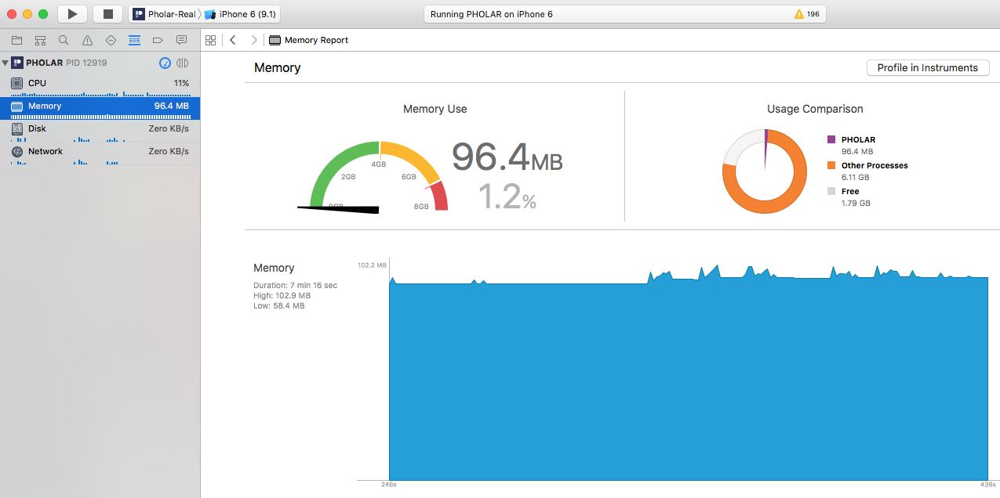

Eunchul Jeon
Examine the behavior of one or more apps or precesses
Examine device-specific features, such as Wi-Fi and Bluetooth
Perform profiling in a simulator or on a physical device
Create custom DTrace instruments to analyze aspects of system and app behavior
Track down problem in your source code
Conduct performance analysis on your app
Find memory problems
Optimize your app for greater power efficiency
System-level troubleshooting
Automate testing by custom scripts

reveal.js enables you to create beautiful interactive slide decks using HTML. This presentation will show you examples of what it can do.